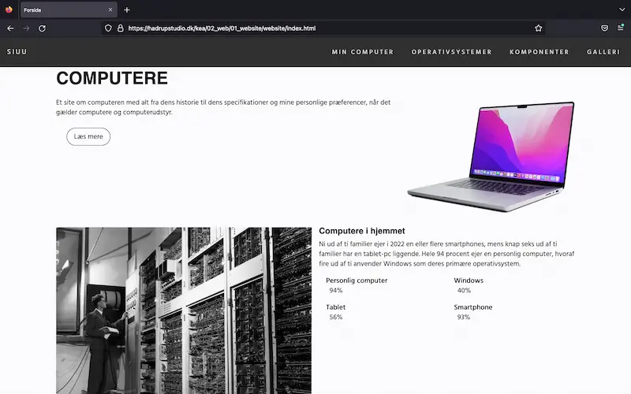
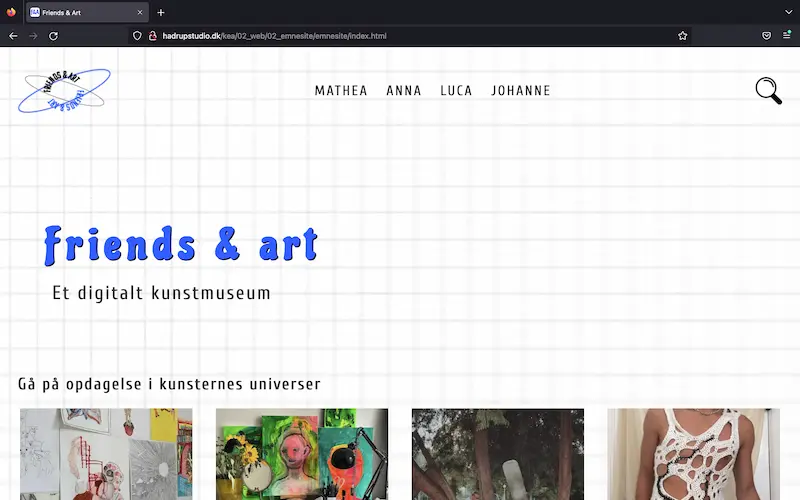

Grundlæggende Web
Tema 2
Fundament
Tema 2 lagde fundamentet for min forståelse for design og udvikling af digitale brugergrænseflader. Jeg blev blandt andet introduceret til Adobe programmer som XD, Illustrator og Photoshop, FileZilla og Visual Studio Code. Derudover opnåede jeg viden indenfor designprincipper og procesarbejde.
02.01.02 - website
Studiestartsprøven formede en basisviden for mig om HTML og CSS. Jeg lærte hvordan forarbejde til et site fungerer såsom Wireframes og Layoutdiagrammer, og hvordan man følger disse i sin kodning. Kodningsprocessen startede med design til mobilstørrelse og herefter computerstørrelse, hvor jeg heraf lærte begrebet “mobile first” at kende, og at et site gøres responsivt.
 gø tø02.02.01 - emnesite
Emnesiteopgaven fuldførte jeg i form af et digitalt kunstmuseum indeholdende kunst fra 4 af mine venner. I processen lærte jeg om forskellige designmæssige stilarter, moodboard, mockup og styletile. Jeg blev yderligere introduceret til brugertesten “5 sekunders test” som et værktøj til at vurdere designet på et site baseret på brugernes førstehåndsindtryk.
 gø tø